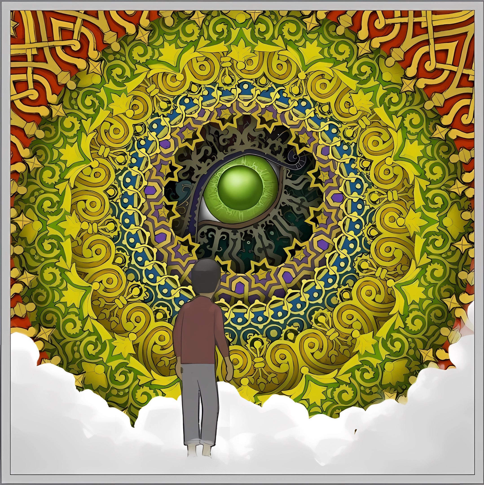

墙外人
2023.3.16
我只是觉得这几天心理颇不宁静，各种情感像悲情滥剧重复上演。坐在平衡而宁静的教室里时刻能听过低沉的噪声，窗外没有风也没有太阳，不温不火，这一切都使我烦躁。我看到电子钟表里的冒号持久闪烁，电脑屏保的字样无休止地来回，就好像是深陷在某个未知的闭环或圈套里，让我简直不能呼吸。一直到走廊上形形色色的人经过，我才得以喘一口气，然后尝试与他们对视，他们大都没有反应。我觉得我像个怪人了，但是，我只是觉得这样子很有意思呀。
我平生第一次对平衡，永恒产生了一种抗拒，我觉得大家都好像死人一样，不管他们睡着还是醒的，或者穿的什么颜色鲜艳的衣服。我觉得要有莫名的力量扼住我的咽喉，而且它快到了，只剩下五分钟了。
我之前觉得白花点缀在绿叶丛里，看起来像是绿色的沙漠里掩埋了几株枯死的白色的灌木。一旦风开始吹动，就有几丛灌木被绿色的沙丘包裹了，我感受着那种窒息，视线逐渐模糊了。
终焉审判的时钟需要校准，它延迟了半分钟叩响地狱的门。阳光轰轰烈烈地奏响了，天火翻卷并喷涌着热量，鸟、树全部都焚烧殆尽，视界像拼图般却以一种规矩的方式散落，世界因此堕落无尽的黑暗。
发生这一切用去了另外五分钟。
我说停，我还没准备好，但为时已晚。从那之后，我对绿色失去概念了，火红的沙滩上蒸腾着烟气，直叫我晕眩，这部分海域里的水都在顷刻里汽化了，不知为何我当时未感到气压有什么变化。类似的现象，我还不能解释。大地开裂形成的沟壑极为规整，起初我以为是细密的长条，但当浪潮涌来时才窥见玄机：从远及近水道持续分叉，持续细密，持续增长，它们从四周涌来，最远处是同一条河流，又同时一分为二，二分为四，在我感官的多侧同时突进。我已感觉不到视角的局限，还可以究竟全部细节，由密再密，全部角度，全部空间，全部维度。我眼界放大，运转，血红的图案划过，它们的精巧细密难以描述。仍在并驱的水流细极针尖。全部向我取来，我视角持续扩大，微观，终于在尽头听到一声闷钟响声，看见一只妖艳的鲜绿的龙的眼睛。

图片来源:Gorogoa
评论